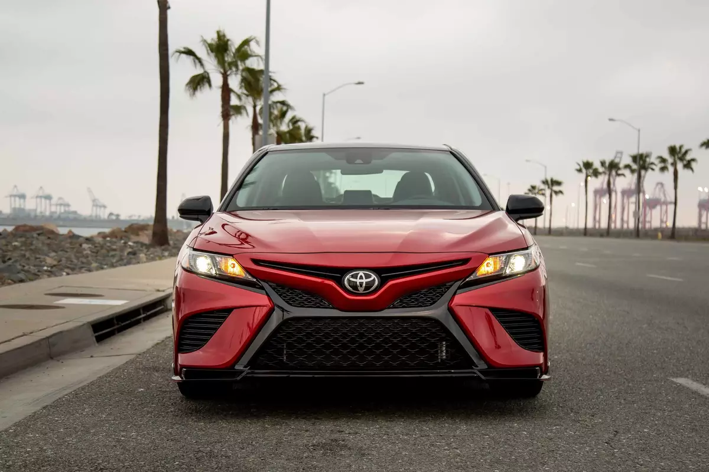
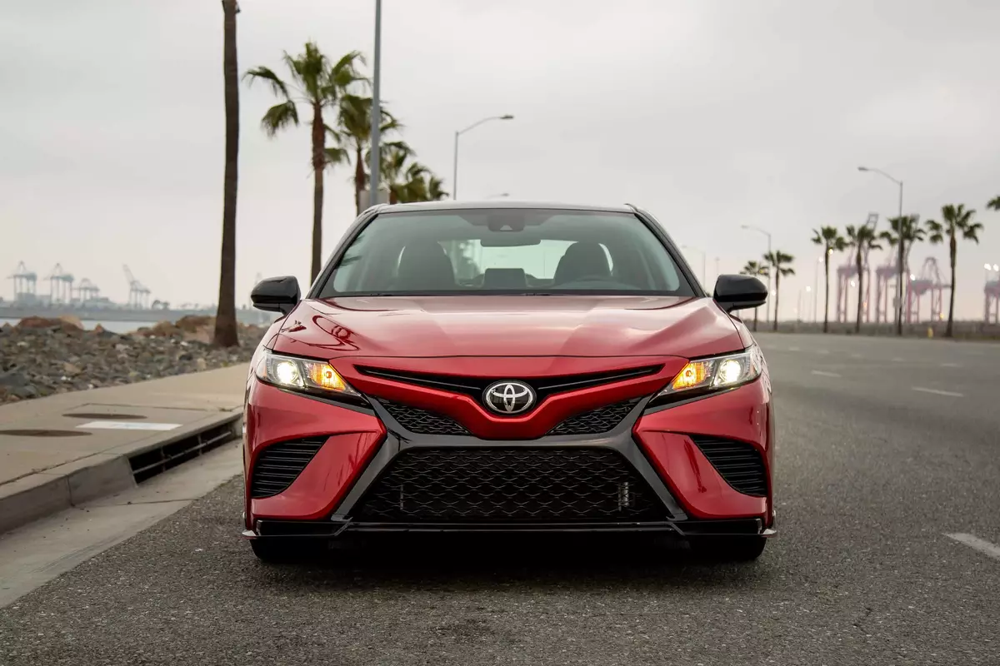
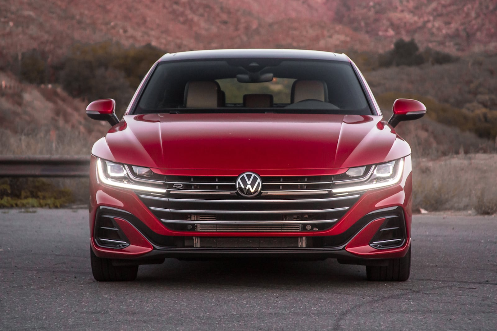
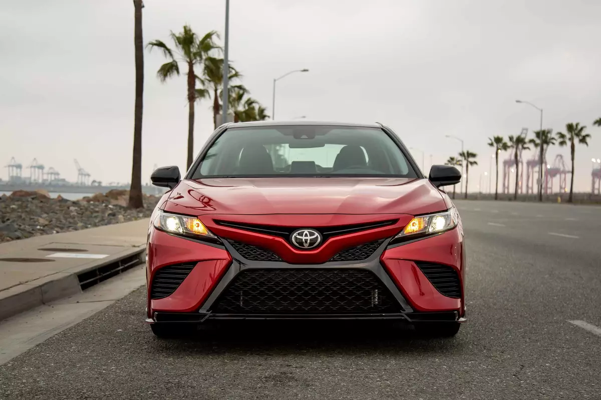
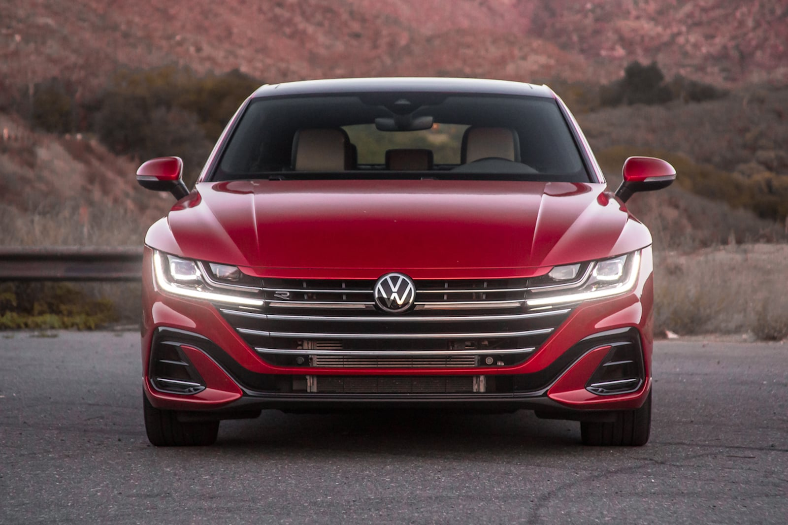
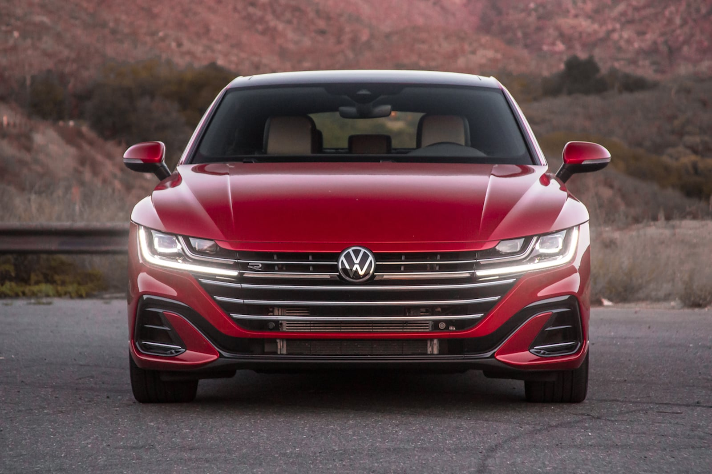
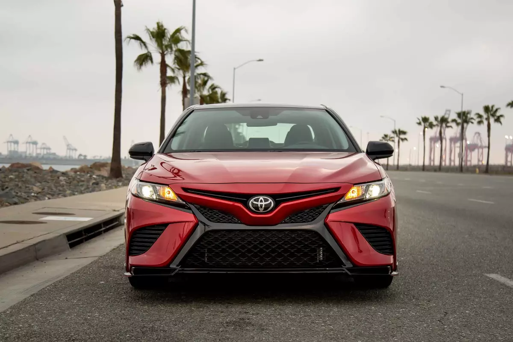
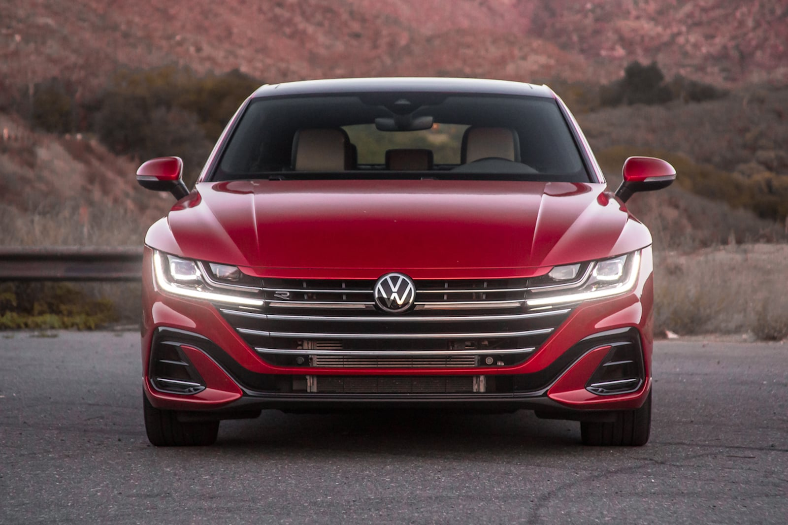

 





In dieser Datenvisualisation werden wir Autoverkäufe in Deutschland auf ihre Marken analysieren und visuell darstellen.
Das Datenset, verfügbar auf Kaggle, umfasst Fahrzeugdaten von der Autoscout24-Plattform, die zwischen 2011 und 2021 gesammelt wurden. Es enthält spezifische Informationen zu 46’405 dokumentierten Fahrzeugverkäufen, einschliesslich Hersteller, Modell, Kilometerstand, Verkaufspreis und Datum der ersten Inverkehrsetzung der Fahrzeuge. Diese Daten bieten eine wertvolle Ressource für die Analyse von Automobilmarkt-Trends in diesem Zeitraum.

Treemap Bei der Betrachtung der Entwicklungen im Automobilmarkt von 2011 bis 2021 bietet ein Treemap eine optimale Lösung, um die Schwankungen in den Marktanteilen der verschiedenen Automarken zu veranschaulichen. Durch effiziente Raumausnutzung erlaubt der Treemap die Darstellung der Marktanteile einer grossen Anzahl an Automarken, ohne die Übersicht zu verlieren. In einem Treemap verdeutlicht die Grösse jedes einzelnen Rechtecks den Marktanteil einer Marke und ermöglicht so einen direkten Einblick in die Marktpräsenz sowohl von führenden als auch von kleineren Marken.
Donut
Um die Veränderungen im Anteil von Diesel-, Benzin- und Elektromotoren im Automobilmarkt über die Jahre hinweg
darzustellen, bietet ein Donut-Diagramm mit einem integrierten Slider für die Jahresauswahl eine anschauliche
Abbildung der Daten. Diese Art der Visualisierung macht es möglich, die Verteilung der Antriebsarten über einen
bestimmten Zeitraum effektiv zu kommunizieren.
Scatterplot
Um die Preisentwicklung der Fahrzeuge mit verschiedenen Motortypen bei steigender Kilometeranzahl zu betrachten,
wird ein Scatterplot verwendet.
Quellen
Slideshow der Autos: https://codepen.io/Hyperplexed/full/MWXBRBp
Datenset: https://www.kaggle.com/datasets/ander289386/cars-germany
Visualisierungen: https://d3-graph-gallery.com/
Leander Duft
Sarah Kovacs